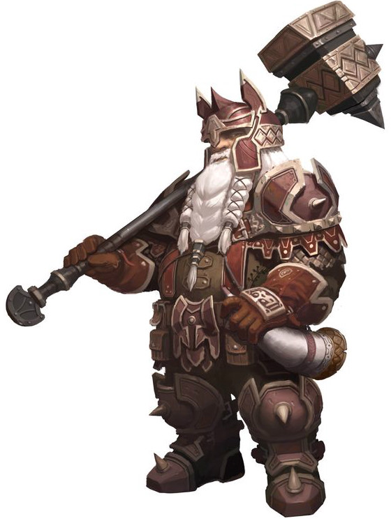

Paladins clung to honorable principles while their kingdom fell around them. Virtue has no place in a world without laws. They seek to show the Gods haven't forgotten them by smashing the skulls of the non-believers.
Starting ability: Consecrate
The paladin slams his weapon into the ground with divine power. The ground in all adjacent squares is hallowed for the next 2 turns. Any enemy occupying or traveling through the effected squares will be struck by S4 holy damage.
